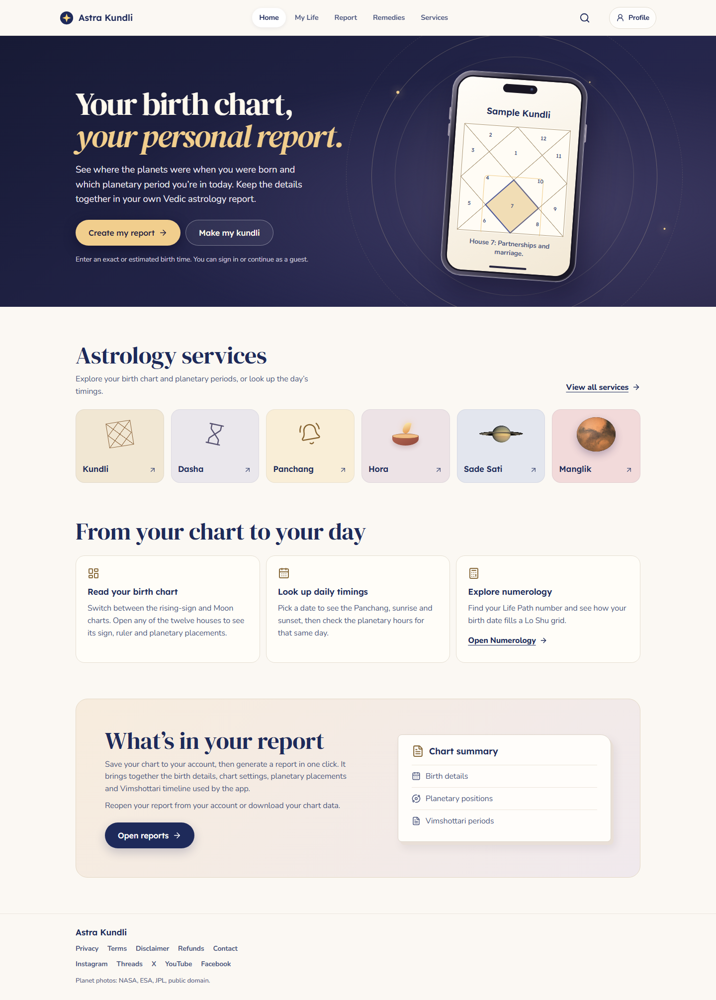
Home on desktop
Report-led landing and the interactive Kundli handset preview.
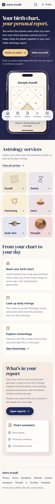
Home on mobile
The same destinations remain visible when you return to Home.
Sign in or continue as a guest
The choice before entering birth details.
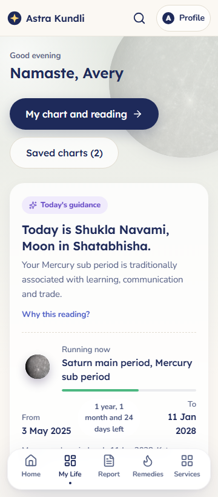
My Life
The personal dashboard holds the saved chart, current period and today’s Panchang.
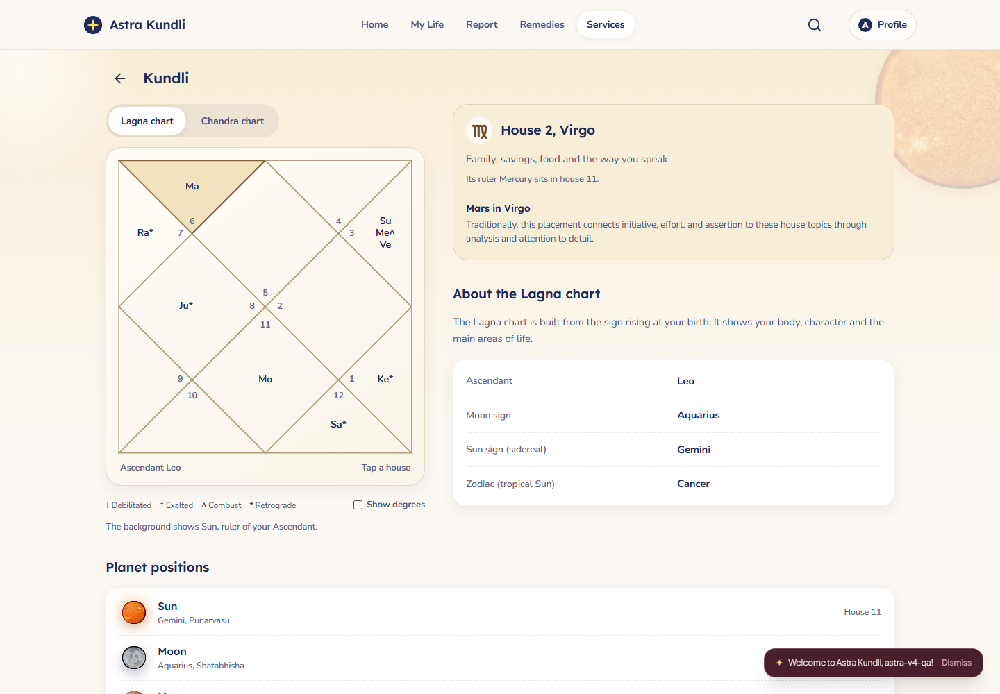
Kundli
The selected house explains the actual planet and sign placements. The legend identifies the chart symbols.
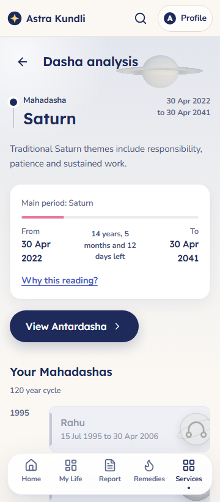
Dasha
The running period shows the time remaining in calendar years, months and days.
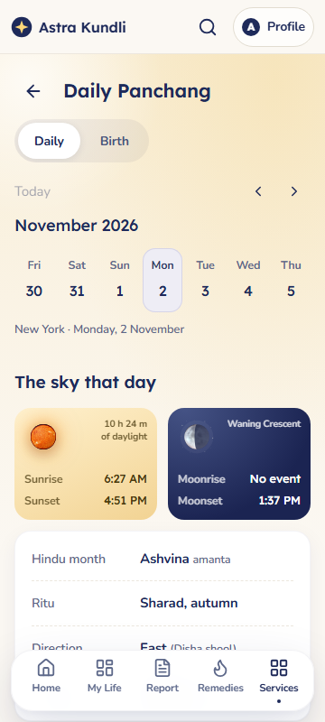
Panchang
Sun and Moon views use the chosen date, with a real lunar texture and the calculated phase.
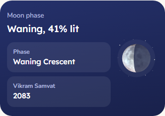
Moon phase
The illuminated shape follows the selected chart or calendar moment.
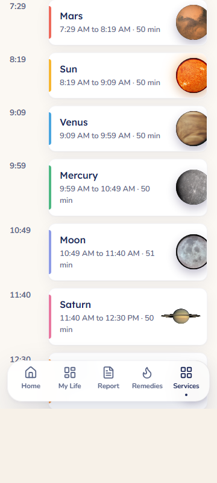
Hora
Panchang and Hora share the selected date and sunrise boundaries.
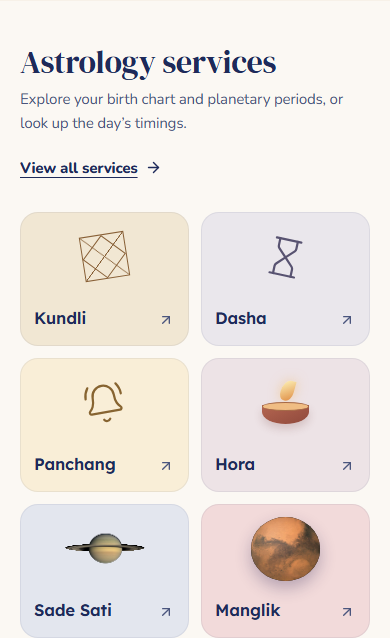
Saturn
The photograph keeps both ends of the rings in view.
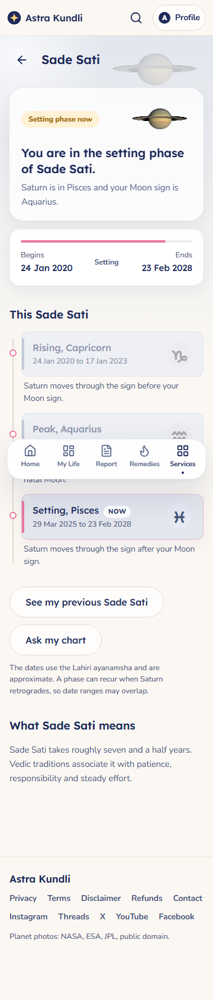
Sade Sati
Each phase uses the glyph for its calculated zodiac sign.
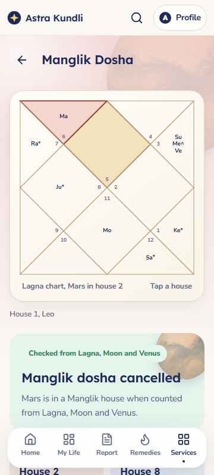
Manglik
The house containing Mars stays highlighted while you inspect another house.